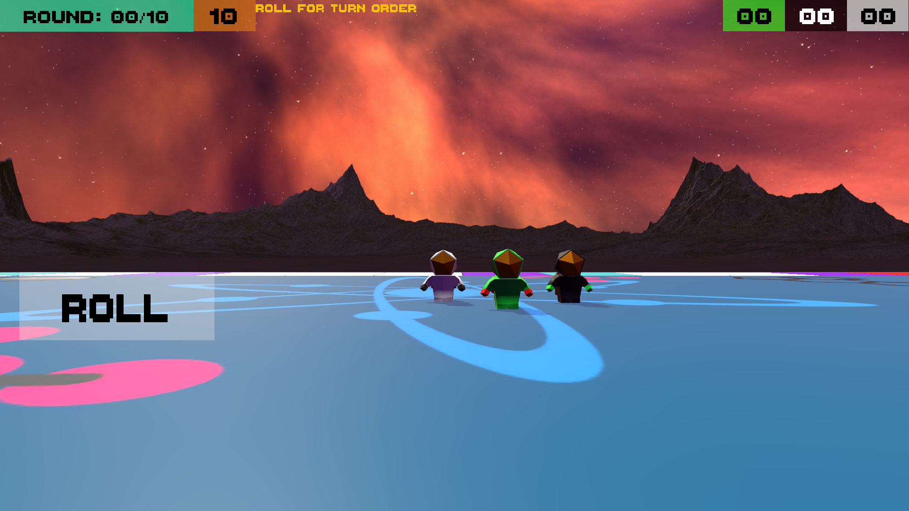
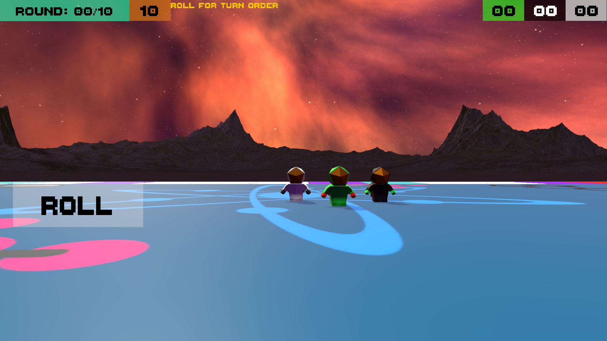
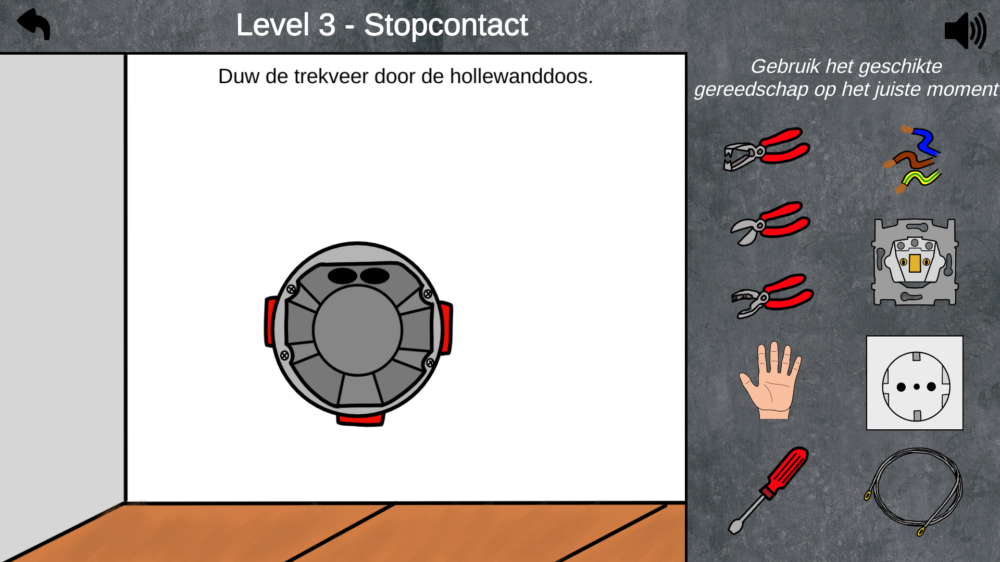
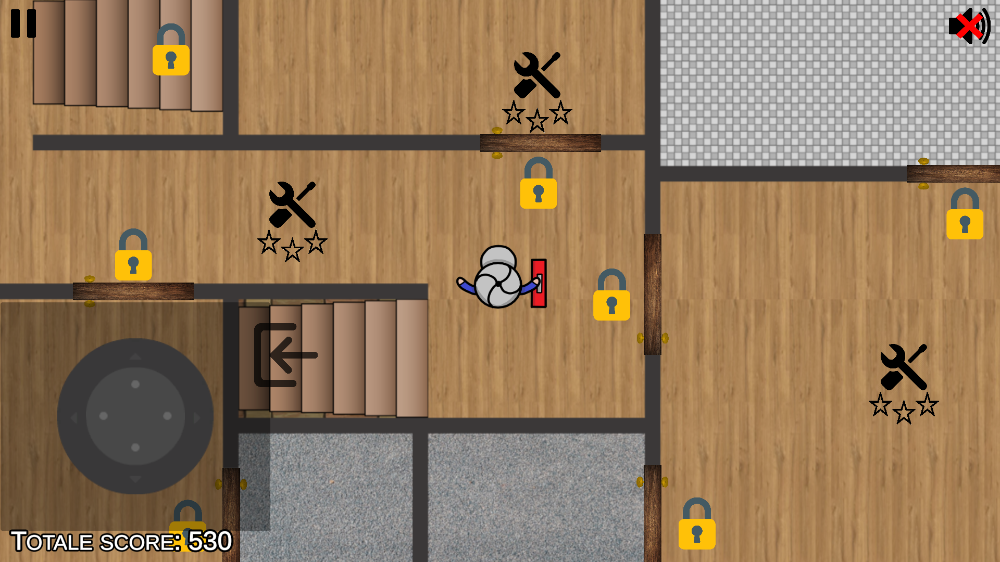
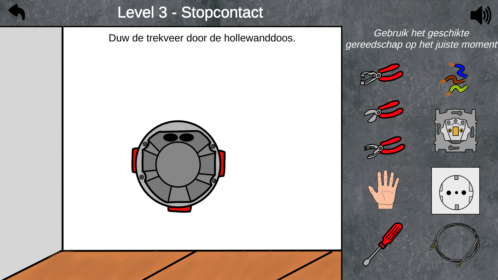
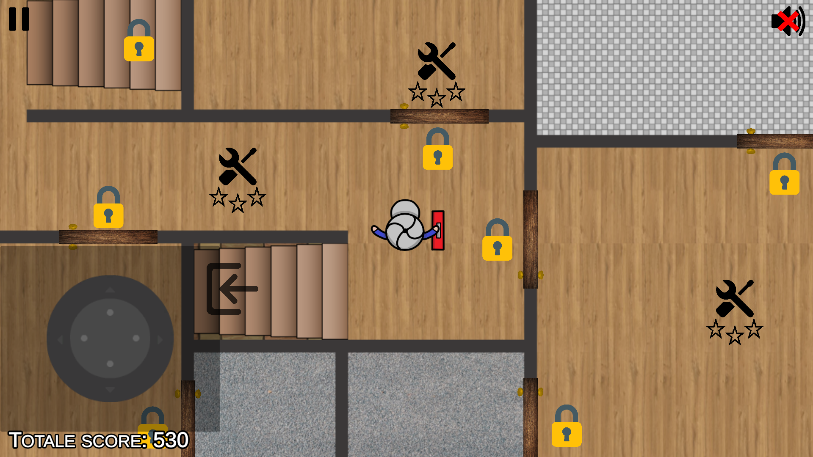

Xarvaine Martina
Welcome to my online portfolio! This portfolio is to highlight my game development and other software development experiences.
I'm a software development student Specializing in Back-end.
Currently in my 3rd year @HU
Projects I've Worked on
Stars is a 3D snake game with educational elements.
In stars you start out as a small snake with 3 hearts. You need to try to survive as long as possible as you grow and not hit walls or yourself, while gathering coins, points & power-ups.
Once you get a purple coin you are prompted with a question, answer it right you get a power-up, answer it wrong you lose a heart.
This was my first unity project. Made with free assets from the unity store.
The goal for stars was to see what it would look like if I could grab an old arcade game and add educational elements to it, while adding my own spin to it.
Stars was developed solo within a month.
Github, Build
Atomic Center is a local multiplayer 3D educational board game.
In Atomic center you play as an astro-scientists trying to piece together the planet's forgotten periodic table. In this game you go around a game board trying to guess elements on periodic table.
Atomic Center can be played by 2-5 players, turn order is decided at the start of the game by rolling dice to see who rolls higher.
Turn order is decided by highest to lowest. The game can be played alone but some dynamic mechanics would not be as harsh.
The player uses 2 D6 dices to move around the board. As the player moves and lands on different tiles it has different prompts.
You are not allowed to walk backwards; each time you pass the start you get a point.
Atomic Center is digitization of a board game I made. Made with free assets from the unity store.
The goal for Atomic Center was to see what it would look like if I prioritized the educational elements first and then add gameplay.
Atomic Center was developed solo within 2 weeks.
Github, Build
 

Villa elektra is a 2D educational game.
In Villa elektra you play as a soon to graduate intern. you were commissioned to do you're next job at this villa but everything is a mess. In this game you play educational mini-games.
The mini games range from quizzes to math questions
Villa elektra was made by Edwin van Emst, The goal for Villa elektra was to teach & test havo students with elektro techniek knowledge.
We were tasked as a group of students to add a few more levels and port the game to be a browser game.
My tasks on villa elektra:
• Made level 7.
• Made level 9.
• Made meterkast (in-between level).
• Touch functionality for most of the over-world.
• An analog touch joystick.
• Added a menu option to play the levels individually, allowing players to play the game on touchscreen devices.
• Fixed bugs and bugs in the game that prevented the game from being converted into a web game (WEBGL), then made the entire game available as a web game.
Other minor additions were:
• Increased the level max to ten.
• Added entries to access my levels in the over-world.
• The pause screen shows newer levels and level scores.
• Made accounts on GitHub & itch.io, for the next people who were to work on it.
Villa elektra was worked on for 2 months.
Play it now on Itch.IO
 



School projects
Welcome to the school project section of my portfolio! In this section, I am excited to showcase a selection of projects. These projects represent my passion for learning, creativity, and problem-solving skills. Some I do not have access to anymore/ can not release publicly.
Get in touch
Little more about me
I was born in the Netherlands but raised on Curaçao. I've always had a great passion for coding & videogames in general. I'm really into music like I listen to ALOT music, my last spotify wrapped I had 321,602 minutes throughout 2022.
I see projects like a challenge/ puzzle ready to be solved. especially puzzle with entire creative freedom.
My favorite type of games are multiplayer games like: Mario party, Risk of Rain 1 & 2, Mario kart, kirby and the amazing mirror
I also really like Hollow knight.
Thank you for taking a look at my portfolio.
Currently looking into making a 2d action platformer but want multiplayer into the game, so I'm using the recently released Unity's Netcode for GameObjects.
{kind=link}
© Rishino.